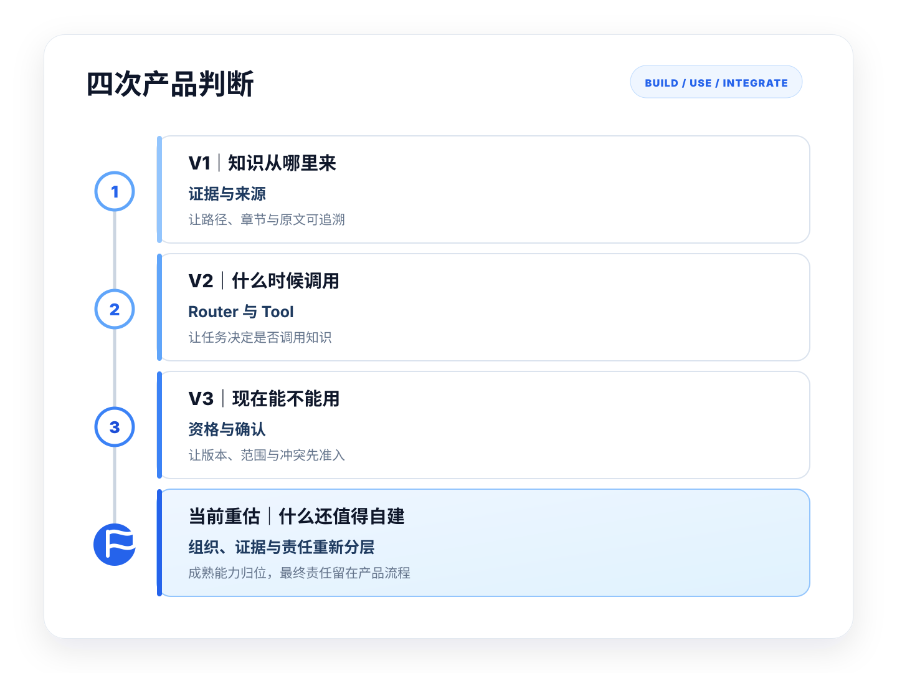

把每一版看成越来越复杂的技术功能清单
这种讲法看不出每一版为什么在当时成立，也看不出后一版为什么没有推翻前一版。
项目 01｜业务智能助手
一个随着 RAG、Agent 与 Wiki 能力成熟，不断重新划分产品边界的本地知识产品。
这个项目源于一套长期真实使用的本地知识助手。随着通用 RAG、Agent 与 Wiki 能力不断成熟，我没有继续堆叠功能，而是持续重新判断：什么交给成熟产品，什么保留为原始证据，什么必须由产品控制。
通用能力可以交给成熟产品，但原始证据、使用资格与最终责任必须留在产品流程里。

A01｜产品演进
如果只看功能，它很容易被讲成“V1 做 RAG、V2 加 Router、V3 增加使用资格，当前再评估如何引入 LLM Wiki”。但每一版真正改变的，是产品应该建设什么、停止什么，以及人的责任留在哪里。
这种讲法看不出每一版为什么在当时成立，也看不出后一版为什么没有推翻前一版。
先判断尚未被解决的缺口，再重新划分 Build / Use / Integrate，先形成最小闭环，并在条件变化后再次判断。
A02｜产品判断与责任分层
每一次演进都不是增加一个新模块，而是发现上一阶段尚未解决的问题，并为它增加一项明确的产品责任。
知识可以被检索命中，但结果无法稳定回到明确来源。
增加来源、路径、章节与原文引用，让每次召回都能够回到原始资料。
本地模型、Embedding、向量库与自定义资料准入共同形成可追溯检索底座。
不是所有任务都需要强制经过 RAG。
将检索封装为按需调用的 search_docs，由 Router 根据任务决定直接回答、检索、澄清或确认。
来源真实，不代表这段知识适合当前任务。
增加版本、来源类型、适用范围、冲突、风险与人工确认，判断知识能否进入当前任务。
LangGraph 仅承接新增状态、暂停恢复与人工确认。
通用知识组织能力已经逐渐成熟，继续自建会造成重复建设。
将主题与关系组织交给 LLM Wiki，同时保留 Raw RAG 作为原始证据通道。
LLM Wiki 负责组织，Raw RAG 负责证据，Router 负责选择，Eligibility 负责准入。
原始事实 → 知识组织与证据 → 调用控制 → 使用资格
Obsidian / 本地文件
保存最终事实来源
LLM Wiki + Raw RAG
组织知识并保留原文核验
Router + search_docs
决定当前任务调用什么
Eligibility Check
决定这些知识现在能不能用
A03｜决策台账
外部能力越成熟，越不需要重复建设；产品责任也从功能实现转向边界控制。
这张台账记录每个阶段用了什么、保留什么、停止什么，以及产品价值移到了哪里。不同阶段的实现深度并不相同，V1 的运行数据也不外推为后续方案的效果数据。
| 阶段与外部变化 | 使用 / 集成 | 保留自建 | 停止建设 | 价值转向 |
|---|---|---|---|---|
V1本地模型、Embedding、向量库已经可用 |
Ollama、Qwen3:0.6B、EmbeddingGemma、Chroma、FastAPI | 资料准入、敏感排除、Chunk 元数据、Path Refresh、引用与回源 | 自训练模型、云端向量库、全盘扫描、重型平台 | 从“能检索”转向“证据可追溯” |
V2Tool Calling、结构化输出和基础 Agent 成熟 |
继续使用 V1；参考 AnythingLLM、Dify 等通用供给 | Router、search_docs 契约、任务路由、短期上下文、确认边界 | 强制检索、通用 Agent 平台、无任务依据的多 Tool | 从“默认检索”转向“按需调用” |
V3状态编排、Checkpoint、HITL 成熟 |
LangGraph 只承接新增状态与暂停恢复 | 来源类型、版本、范围、冲突、资格、人工 Gate | 自建状态引擎、多 Agent、长期 Memory、自动写回 | 从“来源真实”转向“当前任务可用” |
当前重估Wiki 编译、关系组织和知识维护成熟 |
LLM Wiki 负责持久知识组织 | Raw / Wiki / Hybrid 路由、证据回查、来源等级、任务准入 | 自建 Wiki、知识图谱、Overview、Lint、Source Watch | 从“继续自建”转向“组织、证据、选择与准入分工” |
产品落点预览
产品判断最终被落实为一个可操作的知识工作台：用户在同一界面中管理知识源、发起检索、查看原始证据、组织任务材料，并保留回到来源复核的入口。
A04｜BUILD / USE / INTEGRATE
成熟能力直接用，关键链路要打通，任务边界必须自己定义。
A05｜为什么产品价值不断上移
越靠近底层能力，越容易被成熟产品接管；越靠近真实任务，越需要产品判断、人工确认和责任承担。
逐渐标准化
能不能生成？
能不能找到？
什么时候调用？
仍需产品判断
这段知识现在能不能用？
能不能进入流程？
谁确认，谁承担？
底层能力越成熟，产品价值越集中在任务判断、流程准入与责任承担上。
A06｜这个案例中的产品经理角色
不是把所有能力都做进产品，而是持续把抽象判断落成具体选择。
起点是资料分散、上下文难恢复、需要基于来源整理材料，以及私人资料不适合默认上云。
持续检查市场已解决什么、哪些能力已标准化、什么可以直接使用、哪些责任不能一起交出去。
把成熟能力、自建部分和必须保留的责任拆开，明确哪些直接使用、哪些需要集成、哪些必须留在产品中。
不为展示技术复杂度引入更大模型、多 Agent、自动写回或完整企业治理能力，只建设真实任务需要的最小闭环。
AI 负责检索、组织信息和提出候选判断；人负责确认来源、适用范围、风险、承诺与最终使用。
将来源筛选、路径刷新、无结果处理、低置信度澄清、版本状态、人工确认和原始证据回查，沉淀为明确的产品规则。
A07｜当前边界与停止条件
当前核心任务已经覆盖，证据能够回查，调用、准入与人工确认也已闭环，因此不再增加功能。
继续扩展只会重新变成功能堆叠，而不是解决新的真实问题。
A08｜何时重新打开边界
只有当新需求稳定、持续且可验证，并明确超出当前边界时，才重新开启对应的产品判断。
当新的资料类型、敏感边界或原文回查要求超出现有本地证据层时，才重新评估证据通道。
当真实任务开始持续涉及共享、权限、审核、责任分工和组织级使用记录时，才打开多人协作边界。
当版本、适用范围、来源优先级、冲突与风险形成稳定规律，并足以支持预判、评分和路由时，再扩展资格判断能力。
当写入、同步、发布或调用业务系统成为稳定需求，且权限、确认节点和风险边界已经清楚时，才打开自动执行边界。
当模型能力、上下文长度、复杂路由或响应延迟持续阻碍真实任务，并且新的本地能力能够明确解除瓶颈时，再重新评估技术底座。
B01｜阶段与证据口径
从 V1 的真实运行与小样本验证，到 V2 的产品规则、V3 的资格模型与关键交互，再到 Raw / Wiki / Hybrid 的目标架构；不同阶段的证据类型不同，不能相互替代。
| 阶段 | 新增责任 | 证据类型 | 本页重点 |
|---|---|---|---|
| V1 | 本地知识与原始证据 | 真实运行与小样本验证 | 链路、界面、索引、引用与 Bad Case |
| V2 | 按需调用控制 | 产品级原型与控制规则 | Router、search_docs、Route 与失败处理 |
| V3 | 当前任务使用资格 | 字段模型与关键交互 | 资格字段、人工确认、状态与场景 |
| 当前重估 | 知识组织重新分工 | 目标集成架构 | Raw / Wiki / Hybrid、来源层级与风险 |
B02｜用户任务与产品范围
找回规则、恢复上下文、基于来源整理材料，并在资料变化后保持索引一致。
起点是一个长期反复出现的本地知识任务：只记得结论，却无法快速回到分散资料中的完整依据。产品先解决找回、恢复与回查，再将可复用的证据链和使用边界抽象到企业知识场景。
任务终点不是得到一段回答，而是获得能够继续支持材料整理、差异判断和下一步行动的证据。
找得到：从多来源资料中召回相关内容。
看得懂：恢复标题、章节、上下文和关联。
能复核：回到文件路径、原文片段和来源。
B03｜V1 本地知识层
V1 不是聊天机器人，而是一套从资料准入、索引、检索到来源回查的本地知识工作台。
| 分工 | 具体内容 |
|---|---|
| Use | Ollama、Qwen3:0.6B、EmbeddingGemma、Chroma，以及现有文件解析组件。 |
| Integrate | Obsidian 与本地文件统一进入索引；Embedding 接入 Chroma；FastAPI 接入 Web GUI；文件更新接入 Path Refresh；检索结果接入来源引用。 |
| Build | 资料准入、敏感目录排除、Chunk 与元数据规则、Path Refresh、来源/路径/章节/原文展示、默认只读与日常检索工作台。 |
| 取舍 | 为什么 | 当前选择 | 代价 |
|---|---|---|---|
| 本地优先 | 资料不外传，日志和索引范围需要先收住。 | 本地模型、本地索引、本地缓存与日志。 | 性能与模型能力上限较低。 |
| 先跑最小闭环 | 复杂 Agent 会掩盖资料、检索和引用问题。 | 先跑通检索 → 引用 → 人工复核。 | 暂不建设复杂编排和自动行动。 |
| 默认只读 | 错误写回会污染原始知识。 | 回答与行动分离，写入能力不进入 V1。 | 自动化程度较低。 |
| 明确证明边界 | MVP 不能包装成生产系统。 | 区分已验证能力与未完成工程化能力。 | 不能把产品级原型包装成生产系统。 |
| 决策 | 问题 | 选择 | 代价 |
|---|---|---|---|
| D01先检索，再回答 | 流畅回答容易掩盖证据不足。 | 先返回候选资料、路径和片段，再生成基于来源的轻量回答。 | 交互步骤更多，回答不追求一次完成。 |
| D02原始资料作为事实来源 | 索引与生成内容可能过期或失真。 | 原始文件负责最终事实，索引负责发现和定位。 | 用户仍需维护原始资料。 |
| D03默认只读 | 错误写回会污染原始知识。 | 不自动修改、删除或覆盖来源文件。 | 牺牲部分自动化体验。 |
| D04索引可以慢，检索必须方便 | 低配设备难以同时兼顾高速建库和复杂检索。 | 索引作为低频后台任务，优先保证日常查询与来源回查。 | 首次索引和文件刷新需要等待。 |
| D05按路径刷新 | 旧 Chunks 会造成冲突和过期证据。 | 按 path 删除旧 Chunks 后重新建立索引。 | 刷新慢于增量追加，但换取索引一致性。 |
| 控制点 | 当前选择 | 为什么 | 暂不建设 |
|---|---|---|---|
| 资料准入 | 只索引配置允许的范围，不做全盘扫描。 | 防止私人、临时、无关和过期资料进入知识层。 | 权限体系与复杂目录策略。 |
| Chunk | chunk_target_chars = 1200；chunk_overlap_chars = 150 | 保留条款、条件与跨段上下文，同时控制本地索引成本。 | semantic chunk / section-aware chunk。 |
| 召回范围 | Top-K = 5 | 控制上下文噪音，优先验证带来源回答。 | rerank / MMR / hybrid search。 |
| 引用与刷新 | 回答保留路径、标题、章节和原文；按 path 删除旧 Chunks 后重建。 | 同时控制来源不可查与索引过期。 | diff / rollback / audit trail。 |
以上参数是当前 MVP 的阶段选择，用于现有设备、资料规模与验证目标，不宣称为理论最优配置。
这些产品选择是否成立，还需要回到真实运行、检索结果与 Bad Case 中验证。
B04｜V1 验证与 Bad Case
验证重点不是模型能不能回答，而是资料能否稳定进入索引、来源能否回查、回答是否基于证据，以及失败能否定位。
验证从资料链路开始，生成答案只是最后一层结果。
命中：是否召回到预期来源；可用：召回结果是否足以支持当前任务判断。
注：以上仅属于 V1 的小样本运行证据，不外推为 V2、V3 或当前目标架构的效果数据。
| Bad Case | 为什么危险 | 产品规则与下一步 |
|---|---|---|
| 相似项目误召回 | 语义相似的其他项目资料可能被误当成当前项目依据。 | 保留项目、来源与路径字段；后续增加范围筛选和适用性判断。 |
| 长文档总结只覆盖局部章节 | 相似片段不能代表完整文档，条件与例外容易遗漏。 | 总结任务优先使用目录、章节结构与多片段组合，并保留原文回查。 |
| 复杂格式解析不稳定 | 文件可读取，不代表表格、特殊格式和复杂结构能稳定转换。 | 建立资料准入与格式失败记录，不宣称支持所有格式。 |
| 轻量模型生成与组织质量有限 | 检索正确时，回答仍可能遗漏、重复或组织较弱。 | 检索结果和来源优先于生成回答，回答只作为辅助整理。 |
| 引用或召回不足时仍可能强答 | 错误但流畅的回答会掩盖证据不足。 | 引用不足时明确返回资料不足、缩小范围或转人工判断，不由模型补写。 |
界面内指标、样本量与版本号均为交互示意，不代表实际验证结果。
V1 解决了资料能否被找到并回到来源，但还没有解决每个任务是否都应该调用知识。
B05｜V2 调用控制
V1 被保留为可调用的知识能力；V2 新增的不是另一套知识库，而是决定什么时候调用、什么时候澄清、什么时候停止。
| 外部能力 | 已经标准化的部分 | 对本项目的影响 |
|---|---|---|
| AnythingLLM | 本地知识库、基础检索和基础 Agent | 不再重复建设通用知识库外壳，但不替换已运行的 V1。 |
| Dify | 模型、数据源、工具和流程编排 | 通用工作流能力优先使用成熟供给。 |
| LangGraph | 状态、Checkpoint、人工中断 | 只在后续需要状态、暂停恢复与人工确认时引入。 |
| 对象 | 负责什么 | 不负责什么 | 为什么需要 |
|---|---|---|---|
| Router | 判断任务是否需要本地知识，以及进入哪条路径。 | 不直接生成最终业务判断。 | 避免所有问题默认检索或默认进入 Agent。 |
| search_docs | 以稳定 Tool Contract 调用 V1 检索能力。 | 不判断召回知识当前能不能使用。 | 让 V1 从固定页面能力变成可被流程调用的工具。 |
| Short-term Memory | 保留当前任务中已确认的目标、范围和上下文。 | 不作为长期知识库。 | 减少连续任务中的重复解释，同时避免长期记忆污染。 |
| Agent Core | 读取 Route、工具结果和当前任务状态，组织下一步。 | 不越过人工确认或自动执行高风险动作。 | 将检索、澄清、输出和确认组织为连续任务。 |
| 用户任务 | Route | 系统行为 | 失败回退 |
|---|---|---|---|
| 通用解释 | direct | 不调用本地知识 | 低置信度时转澄清 |
| 本地项目问题 | retrieve | 调用 search_docs | 无结果时返回澄清 |
| 目标或范围模糊 | clarify | 先询问任务范围 | 不强行检索 |
| 写入或高风险动作 | confirmation | 暂停并请求人工确认 | 未确认则进入 blocked |
| 条件或权限不满足 | blocked | 停止执行 | 不改变外部状态 |
| 能力边界 | 产品判断 | 当前方案中的落点 |
|---|---|---|
| 输入边界 | Agent 不直接读取全部知识库，只消费带来源的检索结果。 | search_docs 返回路径、标题、章节、原文与引用。 |
| 路由边界 | 不是所有问题都调用知识，也不是所有任务都进入 Agent。 | Router 选择 direct / retrieve / clarify / confirmation / blocked。 |
| 行动边界 | 回答不能自动变成写入、删除、同步或发布动作。 | confirmation / blocked；未确认不改变外部状态。 |
| 记忆边界 | 长期 Memory 在写入条件可控前不是资产。 | V2 只保留 Short-term Memory，不建设长期自动记忆。 |
V2 的价值不是增加更多 Agent 能力，而是明确什么信息能进入、什么任务要分流、什么动作必须停止，以及什么记忆暂时不能保存。
| 验证项 | 检查内容 | 失败处理 |
|---|---|---|
| 路由正确性 | Route 是否符合当前任务，是否避免重复或无效调用。 | 低置信度转 clarify，不默认进入 retrieve。 |
| 来源完整性 | 路径、标题、章节、原文与引用是否完整保留。 | 字段不完整则不进入生成回答。 |
| 无结果处理 | search_docs 是否明确返回无结果状态。 | 返回澄清或建议调整范围，不由模型补写。 |
| 短期上下文边界 | 前一任务内容是否污染当前判断。 | 按任务清理或重置短期上下文。 |
| 高风险拦截 | 写入或高风险动作是否停在人工确认前。 | 未确认保持 blocked，不改变外部状态。 |
系统保留路由、工具调用与失败原因，供用户和评测过程复核。
V2 解决了什么时候调用知识，但来源真实仍然不代表知识适合当前任务。
B06｜V3 使用资格
V3 不重新建设可信上下文，而是在 V1 检索结果旁增加当前任务的使用资格。
| 问题 | 风险 |
|---|---|
| 来源真实，但版本过期 | 将旧规则当成当前规则 |
| 来源真实，但只是历史项目经验 | 将特殊案例当成标准能力 |
| 来源真实，但不适用于当前场景 | 相关性被误当成适用性 |
| 多个真实来源互相冲突 | 系统无法自动选择责任依据 |
| 有引用，但仍不能形成承诺 | 证据存在不代表可以进入对外材料 |
V1｜原始证据
这些字段用于回到事实来源，证明内容不是模型编造。
V3｜当前任务资格
这些字段附着在整组 V1 证据旁，用于判断其能否进入当前任务。
| 判断维度 | 字段口径 | 产品作用 |
|---|---|---|
| 来源类型 | 正式制度 / 当前手册 / 历史案例 / 会议记录 / 个人经验 / AI 生成内容 | 决定默认依据优先级 |
| 版本状态 | 当前 / 待确认 / 已过期 / 版本不明 / 与新版冲突 | 阻止旧知识直接进入当前任务 |
| 适用范围 | 客户 / 地区 / 产品版本 / 流程阶段 / 任务类型 / 使用前提 | 将相关性与适用性分开 |
| 冲突状态 | 无冲突 / 待核对 / 明确冲突 / 需责任人确认 | 阻止系统静默选择责任依据 |
| 风险等级 | 低 / 中 / 高 | 决定是否需要人工确认，以及确认强度 |
| 人工责任 | 谁确认、确认什么、为什么允许使用、有哪些保留条件 | 保留最终责任与审核记录（Audit Trace） |
资格结果：上述判断共同生成可使用、限定使用、仅供参考、待确认或禁止使用。
直接可用、批准使用、限定使用与仅供参考可按各自权限进入后续任务；拒绝终止，不进入任务。
问题：一项能力能不能写进当前客户方案？
| 候选来源 | 资格判断 | 资格 |
|---|---|---|
| 当前产品手册 | 当前版本、标准能力、适用于当前产品。 | 可使用 |
| 历史定制项目 | 来源真实，但属于特定客户定制。 | 限定使用；只能作为案例或需注明条件。 |
| 已过期手册 | 来源真实，但版本失效。 | 禁止使用 |
资格处理
后续动作
使用资格不是流程终点。允许使用的材料需要带着来源、资格结论与限制条件进入方案、复盘或协作材料；禁止使用的内容不进入任务。
V3 解决了知识当前能不能用，但知识之间的组织与关系仍然大量依赖临时生成。
B07｜当前知识架构重估
知识组织可以交给成熟产品，但高风险任务仍然需要回到原始证据、经过资格判断并由人确认。
| 原 Raw RAG 方式 | 成熟 Wiki 能力可承接的部分 |
|---|---|
| 平铺 Chunks | 持久 Page / Concept / Link |
| 每次临时归纳 | 可持续维护的 Overview / Synthesis |
| 跨文档关系临时生成 | 可持续组织跨文档关系 |
| 索引刷新为主 | 可承接 Review / Lint 与知识维护 |
| 适合精确查证 | 更适合主题理解与知识导航 |
| 查询模式 | 适用任务 | 返回内容 | 责任边界 |
|---|---|---|---|
| raw | 精确查证 | 原文、路径、章节、Chunk | 原始证据与最终核验 |
| wiki | 主题理解 | 页面、概念、关系、Overview | 知识组织与导航 |
| hybrid | 跨资料综合或高风险判断 | Wiki 全貌 + Raw 关键证据 | 进入资格判断前的组合结果 |
| 任务信号 | 查询模式 |
|---|---|
| 精确查证、原文定位 | raw |
| 主题理解、关系导航 | wiki |
| 跨资料综合或高风险判断 | hybrid |
| 低置信度或意图不清 | 澄清或人工选择 |
| 层级 | 内容 | 能否作为核验依据 |
|---|---|---|
| L0 | 原始文件 | 可以，仍需资格判断 |
| L1 | Raw Chunk | 可以，但需回查上下文 |
| L2 | Wiki 来源摘要 | 仅用于导航，不能单独使用 |
| L3 | Wiki 综合页 | 必须回到来源 |
| L4 | 当前生成输出 | 必须回到下层证据并经过资格判断 |
越往上越便于理解，越不能脱离下层证据与使用资格。
| 风险 | 发生方式 | 产品控制 |
|---|---|---|
| 摘要遗漏 | Wiki 页面压缩了条件或例外 | 回到 Raw 核验 |
| 关系误连 | 相似概念被错误关联 | 保留来源与人工修正 |
| 页面陈旧 | 原始资料更新但 Wiki 未同步 | 目标机制：Review / Lint / 更新时间检查 |
| 派生知识被当成事实 | 综合页被直接引用 | 明确来源层级 |
| 错误持续累积 | 错误关系进入后续页面 | 建立回查、修正与审阅机制 |
Wiki 负责组织和导航，Raw 负责最终核验；高风险任务还需经过 Hybrid、资格判断与人工确认。
B08｜决策与证据附录
正文保留关键产品设计；完整配置、决策备忘录、视觉资产与风险记录在附录中直接展开，便于连续核查。
Ollama · Qwen3:0.6B · EmbeddingGemma · Chroma · FastAPI · vanilla HTML/CSS/JS；2020 Intel i5 / 16GB / 无独立 GPU。
Chunk target 1200 字符 · overlap 150 字符 · Top-K = 5 · 默认只读 · Path Refresh；当前解析范围：Markdown / TXT / DOCX / PDF / PPTX。
仅归属 V1：163 个文件 · 390 个 Chunks · 10 个真实问题 · 9 个明确命中 · 1 个部分命中 · 8/10 可用判断。
真实运行截图、产品交互原型和历史设计图分开标注；图号、迁移位置、证据类型与当前判断均在下方直接可见。
以下内容保留旧版中最有价值的“为什么—备选方案—选择—代价”过程，并按新版 V1 / V2 责任边界重新整理。全部直接展示，避免关键判断被隐藏。
| 决策 | 问题背景 | 备选方案 | 当前选择 | 实现证据 | 代价与风险 | 重开条件 |
|---|---|---|---|---|---|---|
| 01｜本地优先 | 私人资料、索引和日志边界需要先被控制。 | 云端模型与托管知识库；本地闭环。 | 本地模型、本地索引、本地缓存与日志。 | V1 在 2020 Intel i5 / 16GB 设备真实运行。 | 性能和模型能力上限较低。 | 本地能力持续阻碍真实任务，且外部方案能满足隐私边界。 |
| 02｜先跑最小闭环 | 复杂编排会掩盖资料、检索与引用问题。 | 先建通用 Agent；先验证检索闭环。 | 先跑通检索 → 引用 → 人工复核。 | 163 个文件、390 个 Chunks 与 10 个真实问题的小样本验证。 | 暂不支持复杂任务编排和自动行动。 | 连续任务形成稳定、可验证的路由需求。 |
| 03｜默认只读 | 错误写回会污染原始知识。 | 自动写回；预览后确认；完全只读。 | 回答与行动分离，写入能力不进入 V1。 | 现有工作台只检索、引用和整理，不修改原文件。 | 自动化程度较低，后续动作仍需人工完成。 | 写入需求稳定，权限、预览、回滚和责任人均清楚。 |
| 04｜证明边界 | MVP 不能被包装成企业生产系统。 | 以完整企业系统叙述；区分已验证与目标方案。 | V1 使用运行证据，V2/V3 使用原型与规则，当前重估使用目标架构。 | B01 阶段口径与各图证据类型明确标注。 | 呈现不以“完成度”制造冲击，必须持续解释边界。 | 多人、权限、审计和系统集成完成真实验证。 |
| 决策 | 问题背景 | 备选方案 | 当前选择 | 实现证据 | 代价与风险 | 重开条件 |
|---|---|---|---|---|---|---|
| 05｜可信上下文 | 流畅回答会掩盖证据不足。 | 直接生成；先展示证据再回答。 | 先检索并保留候选来源、路径和片段，再生成轻量回答。 | B03-01 真实运行工作台与 B04-02 回答引用截图。 | 交互步骤更多，不能追求一次性完成。 | 新的交互能在不削弱可核查性的前提下降低负担。 |
| 06｜资料准入 | 全盘扫描会混入私人、临时和无关资料。 | 默认全盘；用户选择；配置允许范围。 | 只索引配置允许的 Obsidian 与本地目录，敏感目录默认排除。 | 来源扫描规则和索引任务支持显式范围。 | 新增来源需要配置，无法自动覆盖所有资料。 | 多人共享、权限或复杂目录成为稳定需求。 |
| 07｜Chunk 策略 | 片段过短会丢失条件，过长会增加噪音与本地成本。 | 固定短片段；章节切分；语义切分。 | chunk_target_chars = 1200，chunk_overlap_chars = 150。 | 当前索引参数和 390 个 Chunks 的 V1 样本。 | 对复杂表格和长文档结构仍不稳定。 | Bad Case 稳定指向章节或语义切分收益。 |
| 08｜Top-K 召回范围 | 召回过多增加噪音，过少可能遗漏关键依据。 | 扩大 Top-K；固定小范围；增加 rerank / MMR。 | Top-K = 5，先验证带来源回答。 | 10 个真实任务问题的小样本运行结果。 | 不能证明适用于所有资料和总结任务。 | 稳定出现相关性不足或关键来源遗漏。 |
| 09｜引用与路径刷新 | 来源不可查和旧索引并存都会破坏可信度。 | 仅追加索引；全量重建；按 path 刷新。 | 回答保留路径、标题、章节和原文；按 path 删除旧 Chunks 后重建。 | 引用界面、索引日志与 Path Refresh 规则。 | 刷新慢于追加；部分索引必须避免误删。 | 需要差异追踪、回滚或审计记录。 |
| 决策 | 问题背景 | 备选方案 | 当前选择 | 实现证据 | 代价与风险 | 重开条件 |
|---|---|---|---|---|---|---|
| 10｜Agent 输入边界 | Agent 直接读取全部知识库会放大噪音和权限风险。 | 全库读取；检索结果作为受控输入。 | search_docs 只返回带路径、标题、章节、原文和引用的结果。 | V2 Tool Contract 与产品级原型。 | V2 尚无独立运行效果数据。 | 新工具输入能被稳定验证并纳入同一证据契约。 |
| 11｜任务路由边界 | 不是所有问题都需要本地知识或 Agent。 | 默认检索；默认 Agent；显式路由。 | Router 在 direct / retrieve / clarify / confirmation / blocked 中选择。 | B05 Route 流程图、任务映射和失败规则。 | 路由误判会让后续工具与回答一起出错。 | 任务样本足以支持新的 Route 或更可靠的分类规则。 |
| 12｜行动前确认 | 回答不能自动变成写入、删除、同步或发布。 | 自动执行；低风险自动；统一人工确认。 | confirmation 暂停等待人工确认；未确认进入 blocked，不改变外部状态。 | B05 控制流程与 B06 资格交互原型。 | 高风险任务多一步确认，当前未实现自动写入。 | 权限、风险分级、预览、撤销和责任人可被验证。 |
| 13｜Memory 延后 | 长期记忆在写入条件不清楚时会累积错误和敏感信息。 | 长期自动 Memory；人工维护；仅短期上下文。 | V2 只保留当前任务已确认的 Short-term Memory，不建设长期自动记忆。 | B05 短期上下文边界与原型规则。 | 跨任务连续性较弱，需要用户重新提供信息。 | 写入对象、时机、删除、审阅和纠错责任都可控。 |
| 图号 | 阶段 | 证明内容 | 源文件 |
|---|---|---|---|
| B03-01 | V1 产品设计 | 检索控制、候选结果、Chunk、路径与原文在同一工作区。 | assets/screenshots/search-workspace.png |
| B04-01 | V1 验证 | 索引范围、批次参数、命令预览与运行日志可核查。 | assets/screenshots/indexing-workspace.png |
| B04-02 | V1 验证 | 回答与来源并列展示，可沿路径回到原文复核。 | assets/screenshots/answer-with-citations.png |
以下索引记录旧版视觉资产在新版中的迁移位置、证据类型和当前状态；所有完整图片均在索引后直接展开。
| 资产 | 类型 | 旧版位置 | 新版正文位置 | B08 状态 | 当前判断 |
|---|---|---|---|---|---|
| 工作台首页 | 产品交互原型 | 06｜关键界面 | Tab A｜产品落点预览 | 完整图直接展开 | 继续有效 |
| 检索与引用 | 产品交互原型 | 06｜关键界面 | B03 | 完整图直接展开 | 继续有效 |
| 知识任务问答 | 产品交互原型 | 06｜关键界面 | B05 | 完整图直接展开 | 继续有效 |
| 项目复盘 | 产品交互原型 | 06｜关键界面 | B06 | 完整图直接展开 | 继续有效 |
| 验证与迭代看板 | 产品交互原型 | 13｜验证与 Bad Case | B04 | 完整图直接展开 | 继续有效 |
| 本地 AI 产品最小闭环技术全貌 | 历史技术全貌图 | 07｜技术栈全貌与搭建路线 | — | 历史图直接展开 | 信息仍有效，但已被新版分层结构拆解 |
| 企业知识任务 Agent 工作流架构 | 历史架构图 | 11｜产品架构判断 | — | 历史图直接展开 | 被新版 Router / Eligibility / Raw-Wiki-Hybrid 边界重划 |
| 旧版 V1 / V2 / V3 演进图 | 历史演进图 | 12｜产品演进路径 | Tab A 已重构 | 历史图直接展开 | 被新版四次产品判断叙事替代 |
sources.py：扫描允许索引的来源文件；convert.py：读取 Markdown/TXT，转换 DOCX/PDF/PPTX；ingest.py：Chunk、Embedding、写入 Chroma；search.py：查询向量库并返回候选结果；ask.py：召回 Chunks 并生成本地回答；app.py：检索、问答、状态和索引接口；web/：原生 Web GUI；gui.py 保留早期 Streamlit 验证原型。只扫描配置中允许的 Obsidian 与本地目录；临时文件、归档和高敏感材料默认跳过。合同、证件、财务、医疗、密码及高敏感个人目录不进入索引。原始资料保持既有位置，不复制为新的事实库，也不默认上传云端。
目标长度 1200 字符、overlap 150 字符、默认 Top-K 5。策略优先保留标题、章节、路径和连续短章节的可理解性，避免大量 tiny chunks；参数用于当前设备、资料规模与验证目标，不宣称理论最优。
Citation 绑定来源、路径、标题、章节和原文片段，使回答可以回到原文件复核。完整刷新文件时，先按 path 删除旧 Chunks，再写入重新切分的内容；使用 --max-chunks 等部分索引参数时不执行完整路径清理，避免只重建半个文件。
direct：通用解释，不调用本地知识；retrieve：调用 search_docs，无结果转澄清；clarify：目标或范围模糊时先补充条件；confirmation：写入或高风险动作停在人工确认前；blocked：条件不满足或未确认时不执行。Route、工具调用、来源字段与失败原因进入 Trace；Short-term Memory 只保留当前任务已确认的目标、范围与上下文。
资格记录附着在 V1 检索结果旁，新增来源类型、版本状态、适用范围、冲突状态、风险等级、资格状态、确认意见、确认人和确认时间。状态为待判断 → 待确认 → 已批准 / 限定使用 / 仅参考 / 拒绝，并允许暂停、补充信息后恢复。
Wiki 不独立支撑高风险结论，Hybrid 结果仍需进入 Eligibility Check 和人工确认。
记录各阶段直接使用、重点集成、继续自建与明确停止建设的责任边界。
| 阶段 | Use | Integrate | Build | Stop |
|---|---|---|---|---|
| V1｜运行验证 | Obsidian、本地文件系统、Ollama、Chroma、FastAPI、原生前端与解析库 | 来源扫描、格式转换、Embedding、Chroma、Web GUI 与引用链路 | 资料准入 / 排除、Chunk 元数据、Path Refresh、回答控制与只读工作台 | OCR、多人权限、云托管、自动写回、通用 Agent、知识图谱与完整企业平台 |
| V2｜产品原型 | V1 知识层、Ollama、Qwen3:0.6B、EmbeddingGemma、Chroma、FastAPI | 结构化输出、Tool Calling、Router 模式、短期上下文与路由记录 | 任务分类、Router、search_docs Tool Contract、短期上下文边界、无结果状态与确认边界 | 通用 Agent 平台、多 Agent、长链 Planner、长期自主运行、自动写回、通用 Workflow 与多人权限 |
| V3｜资格方案 | V1 检索与引用、V2 Router 与工具调用、LangGraph 与本地 Checkpoint | search_docs → Eligibility Check → Review State → 人工确认 → 当前任务上下文 | 资格 Schema、来源 / 版本 / 范围 / 冲突 / 风险规则、人工确认节点、准入 UI 与审核记录 | 不增加更多 Agent 功能；不让状态框架替代 Router 或 V1；不跳过人工确认 |
| 当前重估｜目标架构 | Obsidian、本地文件、V1 Raw RAG、Ollama / Qwen3、成熟 LLM Wiki、LangGraph | 成熟 Wiki 的持续组织与 Review / Lint；Raw 原始证据、Router、Eligibility 与人工确认串联 | Raw / Wiki / Hybrid 路由、统一 search_docs、来源映射与层级、高风险回查、资格准入和界面表达 | 不自建 Wiki、Knowledge Graph、自动主题 / 概念页、通用 Wiki 编辑器、Source Watch、Wiki Lint、Review Queue 与 MCP 知识服务。 |